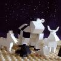

|
|
|
Genesis 15 |
|
| 15:1
After these things the word of the LORD came unto Abram in a vision,
saying, Fear not, Abram: I am thy shield, and thy exceeding great reward. |
Yahweh's Promise
|
| 15:2
And Abram said, LORD God, what wilt thou give me, seeing I go childless,
and the steward of my house is this Eliezer of Damascus?
|
| 15:3
And Abram said, Behold, to me thou hast given no seed: and, lo, one born
in my house is mine heir. |
|
| 15:4
And, behold, the word of the LORD came unto him, saying, This shall not be
thine heir; but he that shall come forth out of thine own bowels shall be
thine heir. |
|
| 15:5
And he brought him forth abroad, and said, Look now toward heaven, and
tell the stars, if thou be able to number them: and he said unto him, So
shall thy seed be. |
|
| 15:6
And he believed in the LORD; and he counted it to him for righteousness. |
|
| 15:7
And he said unto him, I am the LORD that brought thee out of Ur of the
Chaldees, to give thee this land to inherit it. |

 (15:8-10) God tells Abraham to kill some animals for him. (15:8-10) God tells Abraham to kill some animals for him.
Does God want animal sacrifices?
(15:8-9) "God ... said unto him, take me an heifer of three years old, and a she goat of three years old,
and a ram of three years old, and a turtledove, and a young pigeon."
(15:10) "And he took unto him all these, and divided them in the midst."
|
| 15:8
And he said, LORD God,
whereby shall I know that I shall inherit it?
|
| 15:9
And he said unto him,
Take me an heifer of three years old, and a she goat of three years old, and
a ram of three years old, and a turtledove, and a young pigeon.
|
| 15:10
And he took unto him
all these, and divided them in the midst, and laid each piece one against
another: but the birds divided he not.
|
| 15:11
And when the fowls came down upon the carcases, Abram drove them away. |
|
| 15:12
And when the sun was going down, a deep sleep fell upon Abram; and, lo, an
horror of great darkness fell upon him. |
|
| 15:13
And he said unto Abram, Know of a surety that thy seed shall be a stranger in a land that is not
their's, and shall serve them; and they shall afflict them four hundred
years; |
 (15:13) "They shall afflict them four hundred years."
(15:13) "They shall afflict them four hundred years."
How long was the Egyptian captivity?
|
| 15:14
And also that nation, whom they shall serve, will I judge: and afterward
shall they come out with great substance. |
|
| 15:15
And thou shalt go to thy fathers in peace; thou shalt be buried in a good
old age. |
|
| 15:16
But in the fourth generation they shall come hither again: for the iniquity of the
Amorites is not yet full. |
(15:16) "In the fourth generation they shall come hither again."
But, if we count Abraham, then their return occurred after seven generations: Abraham, Isaac (Gen.21:1-3),
Jacob (Gen.25:19-26),
Levi (Gen.35:22-23),
Kohath (Ex.6:16),
Amram (Ex.6:18), and
Moses (Ex.6:20).
 (15:18)
"Unto thy seed have I given this land, from the river of Egypt unto the great river, the river Euphrates:" (15:18)
"Unto thy seed have I given this land, from the river of Egypt unto the great river, the river Euphrates:"
God promises Abraham's descendants the land of
Canaan from the Nile to the Euphrates. But according to Acts 7:5 and
Heb.11:13 God's promise was not fulfilled.
|
| 15:17
And it came to pass, that, when the sun went down, and it was dark, behold
a smoking furnace, and a burning lamp that passed between those pieces.
|
| 15:18
In the same day the LORD made a covenant with Abram, saying, Unto thy seed have I given this
land, from the river of Egypt unto the great river, the river Euphrates:
|
| 15:19
The Kenites, and the Kenizzites, and the Kadmonites,
|
| 15:20
And the Hittites, and the Perizzites, and the Rephaims,
|
| 15:21
And the Amorites, and the Canaanites, and the Girgashites, and the Jebusites.
|
|